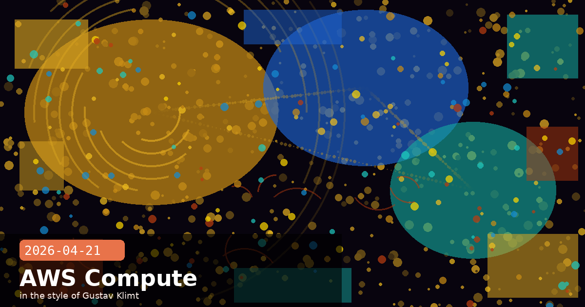

Amazon's $100B AWS Deal, Claude for Legal & Google Cloud Next

🧭 Amazon Commits $5 Billion More and Locks In $100 Billion of AWS Compute — the Decade-Scale Infrastructure Deal Behind Claude
Anthropic's official announcement on April 20 confirmed what the compute mathematics have implied for months: the scale of investment required to stay at the frontier of AI is now measured in hundreds of billions of dollars over a decade. Amazon is investing an additional $5 billion now, with up to $20 billion more contingent on commercial milestones. In return, Anthropic commits to spending over $100 billion on AWS technologies across the next ten years and secures up to 5 gigawatts of compute capacity — roughly 1 GW of Trainium capacity alone available by end of 2026. The deal also confirms that Claude is now the only frontier AI model available across all three major cloud platforms: AWS, Google Cloud, and Microsoft Azure.
What the $100 billion commitment actually buys
The AWS spending commitment is not a "cloud credits" arrangement — it is a commercial volume agreement that ties Anthropic's inference, training, and developer infrastructure to AWS at scale. In practical terms, this means:
Trainium and Inferentia silicon priority. Anthropic gets preferential allocation of AWS's custom AI chips during periods of high demand — a meaningful competitive moat when GPU supply has been constrained at multiple points in the past 18 months.
Infrastructure for 5 GW of future compute. 1 GW of provisioned capacity can run approximately 250,000 A100-equivalent GPUs continuously. At 5 GW, this commitment covers not just current Claude model families but multiple future frontier model generations.
Bedrock as the primary enterprise distribution channel. The deal cements Amazon Bedrock (now generally available in 27 regions) as Anthropic's primary enterprise distribution layer — the same channel that gives Fortune 500 customers self-serve access to Claude without an Anthropic account executive.
The "all three clouds" significance
The announcement explicitly notes that Claude is now available on AWS, Google Cloud, and Azure — a statement no other frontier AI model can match at the same tier. For enterprise architects making build-vs-buy decisions, this removes a common objection: "we're already committed to Cloud X, and Claude isn't native there." The multi-cloud availability means Claude integrations can follow the enterprise's existing procurement and compliance tracks rather than requiring a new cloud vendor relationship.
Revenue context: $30 billion annualised, up from $9 billion in December
Anthropic disclosed that its annualised revenue run rate has surpassed $30 billion, more than tripling in roughly four months. The growth is driven by the same enterprise channel this deal strengthens. As of today, over 1,000 enterprises are spending $1 million or more per year on Claude — a concentration of high-value customers that provides durable revenue even if broader market conditions shift.
For architects evaluating compute and pricing commitments
The $100 billion AWS commitment creates a long-term structural incentive for Anthropic to keep Claude's inference costs on AWS competitive. If you are negotiating enterprise API pricing or evaluating Bedrock Reserved Throughput contracts, this alignment of incentives is a useful data point: Anthropic has strong commercial reasons to price Claude attractively within the AWS ecosystem.
🧭 Claude for Legal Teams Launches — Contract Review, Redlining, and Drafting Inside Microsoft Word
Anthropic ran its live "Claude for Legal Teams" webinar today at 10 AM PT, demonstrating Claude Cowork handling real legal documents end-to-end: reviewing contracts, inserting redline edits, flagging non-standard provisions by severity level, and drafting clauses from scratch — all without leaving Microsoft Word. The webinar also introduced the beta of Claude for Word, now available on Team and Enterprise plans, which brings this capability as a native Word sidebar add-in rather than a copy-paste workflow.
What Claude for Word actually does in a legal context
Artificial Lawyer's review from April 11 identified the following legal-specific functions in the beta:
Clause-level summarisation. Highlights the commercial terms of each clause (liability caps, indemnification scope, IP ownership) in plain language without losing the legal precision that matters.
Non-standard provision flagging. Categorises deviations from the firm's standard playbook by severity — red (high risk, escalate to partner), amber (review required), green (acceptable deviation).
Redline insertion. Proposes alternative language directly as tracked changes, so the counterparty's version and the firm's proposed revision are immediately visible to a human reviewer.
Indemnification clause drafting. Generates first-draft indemnification language from a short plain-text specification, reducing the time from instruction to first draft from ~45 minutes to under 3 minutes in Anthropic's own testing.
Data privacy for legal use
The webinar addressed the question legal IT leaders ask most: what happens to client documents sent to Claude? On Team and Enterprise plans, Anthropic does not use conversation content for training, and the Claude for Word beta routes through the same zero-retention API endpoint as the Claude API. For regulated environments (outside counsel with HIPAA obligations, in-house teams under attorney-client privilege), Anthropic's Enterprise DPA applies automatically. The webinar also confirmed that Claude for Word is compatible with Microsoft's data residency controls — documents processed by the Word add-in stay within the same geographic boundary as the Microsoft 365 tenant.
The "so what?" for in-house legal teams
The realistic productivity gain is not "replace associates" — it is "get a first-pass review done before the human reads it." A junior associate who would spend 3 hours doing an initial contract review can instead receive a structured issues list, severity-ranked, with redline suggestions already in the document. The human's value is now in the judgment calls, not the reading. That is a different skill mix, and teams evaluating Claude for Word should plan their onboarding around developing the prompt-review workflow, not just the tool.
# Example: invoking Claude for a contract review via the API
# (same model available in Claude for Word under the hood)
import anthropic
client = anthropic.Anthropic()
with open("nda_draft.txt") as f:
contract_text = f.read()
message = client.messages.create(
model="claude-opus-4-7",
max_tokens=4096,
system=(
"You are a senior commercial attorney. Review the contract below. "
"Return: (1) a plain-language summary of each key clause, "
"(2) a severity-ranked list of non-standard provisions "
"(RED/AMBER/GREEN with one-sentence rationale each), "
"(3) proposed redline language for each RED and AMBER item."
),
messages=[{"role": "user", "content": contract_text}]
)
print(message.content[0].text)
legalClaude for Wordcontract reviewredliningMicrosoft WordTeam planEnterprise plandata privacyin-house legal
🧭 Anthropic at Google Cloud Next Tomorrow — What to Expect from the Multi-Cloud Claude Story
Anthropic has published its agenda for Google Cloud Next 2026, which opens April 22. The presence at Google's flagship developer conference takes on new significance after today's Amazon announcement: Anthropic is simultaneously deepening its AWS relationship to decade-scale while maintaining its status as the primary third-party model available on Google Cloud's Vertex AI platform. This is not a contradiction — it is the multi-cloud strategy playing out in real time.
What Anthropic is showing at Cloud Next
Based on the published agenda, Anthropic's sessions at Cloud Next focus on three themes:
Claude on Vertex AI — Managed Agents integration. Google Cloud customers will get a demo of Claude Managed Agents running natively within Vertex AI's orchestration layer, including the Vertex-native version of checkpointing and credential management that doesn't require running a separate Anthropic-side agent infrastructure.
Claude Code for GCP-heavy teams. A session on using Claude Code to write, review, and deploy infrastructure-as-code for Google Cloud — Terraform, gcloud CLI, BigQuery SQL, and Pub/Sub event processing — using the agent-native tool-use capabilities added in the April 15 Claude Code update.
Safety and governance for enterprise AI on GCP. A joint Anthropic + Google session on combining Anthropic's Constitutional AI principles with Google's Responsible AI practices for enterprise deployments — targeting the segment of the market that wants a documented governance framework before approving AI at scale.
The competitive framing worth watching
Google is simultaneously a significant Anthropic investor (having led earlier rounds) and a competitor through Gemini. The Cloud Next presence is a reminder that this relationship is structurally cooperative at the cloud infrastructure level even where it is competitive at the model level. For developers building on Google Cloud, the practical implication is that Claude continues to receive first-class treatment in Vertex AI's API surface — not a second-tier integration maintained at minimum viable parity.
If you are at Google Cloud Next in Las Vegas this week
Anthropic's booth is in the AI/ML pavilion. The Claude Code for GCP session is the most developer-actionable — bring questions about Terraform generation accuracy, BigQuery schema inference, and the Managed Agents Vertex integration. These are the edges where the real-world gaps between Claude's capabilities and GCP's infrastructure conventions show up.